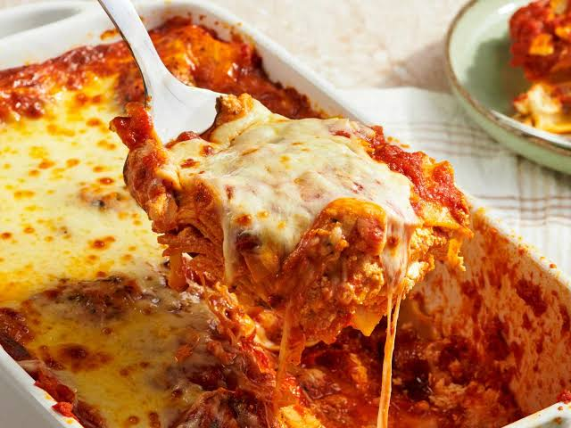

Lasagna
Lasagna is a classic Italian dish made with layers of pasta, rich meat sauce, creamy béchamel, and melted cheese, baked until golden and delicious.

Ingredients
-
500 g ground beef
-
9–12 lasagna sheets
-
1 onion, chopped
-
2 cloves garlic, minced
-
700 ml tomato sauce
-
500 ml béchamel sauce
-
200 g mozzarella cheese
-
1 teaspoon salt
Instructions
- Prepare the meat sauce.
- Prepare the béchamel sauce.
- Cook the lasagna sheets.
- Layer the ingredients in a baking dish.
- Bake until golden and bubbling